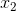
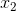
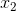
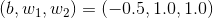

或  中的一方为 1 时，才会输出 1（“异或”是拒绝其他的意思）。那么，要用感知机实现这个异或门的话，应该设定什么样的权重参数呢？
或  中的一方为 1 时，才会输出 1（“异或”是拒绝其他的意思）。那么，要用感知机实现这个异或门的话，应该设定什么样的权重参数呢？到这里我们已经知道，使用感知机可以实现与门、与非门、或门三种逻辑电路。现在我们来考虑一下异或门（XOR gate）。
异或门也被称为逻辑异或电路。如图 2-5 所示，仅当 或  中的一方为 1 时，才会输出 1（“异或”是拒绝其他的意思）。那么，要用感知机实现这个异或门的话，应该设定什么样的权重参数呢？
图 2-5 异或门的真值表
实际上，用前面介绍的感知机是无法实现这个异或门的。为什么用感知机可以实现与门、或门，却无法实现异或门呢？下面我们尝试通过画图来思考其中的原因。
首先，我们试着将或门的动作形象化。或门的情况下，当权重参数  时，可满足图 2-4 的真值表条件。此时，感知机可用下面的式（2.3）表示。
式（2.3）表示的感知机会生成由直线 分割开的两个空间。其中一个空间输出 1，另一个空间输出 0，如图 2-6 所示。
图 2-6 感知机的可视化：灰色区域是感知机输出 0 的区域，这个区域与或门的性质一致
或门在 时输出 0，在 为 (0, 1)、(1, 0)、(1, 1) 时输出 1。图 2-6 中，○ 表示 0，△ 表示 1。如果想制作或门，需要用直线将图 2-6 中的○和△分开。实际上，刚才的那条直线就将这 4 个点正确地分开了。
那么，换成异或门的话会如何呢？能否像或门那样，用一条直线作出分割图 2-7 中的○和△的空间呢？

图 2-7 ○ 和 △ 表示异或门的输出。可否通过一条直线作出分割○和△的空间呢？
想要用一条直线将图 2-7 中的○和△分开，无论如何都做不到。事实上，用一条直线是无法将○和△分开的。
图 2-7 中的○和△无法用一条直线分开，但是如果将“直线”这个限制条件去掉，就可以实现了。比如，我们可以像图 2-8 那样，作出分开○和△的空间。
图 2-8 使用曲线可以分开○和△
感知机的局限性就在于它只能表示由一条直线分割的空间。图 2-8 这样弯曲的曲线无法用感知机表示。另外，由图 2-8 这样的曲线分割而成的空间称为非线性空间，由直线分割而成的空间称为线性空间。线性、非线性这两个术语在机器学习领域很常见，可以将其想象成图 2-6 和图 2-8 所示的直线和曲线。